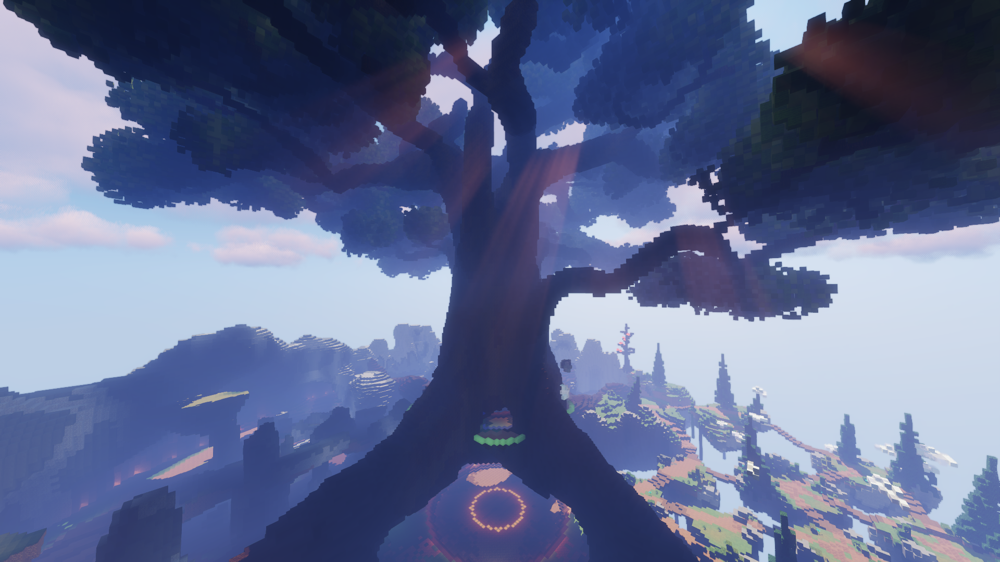
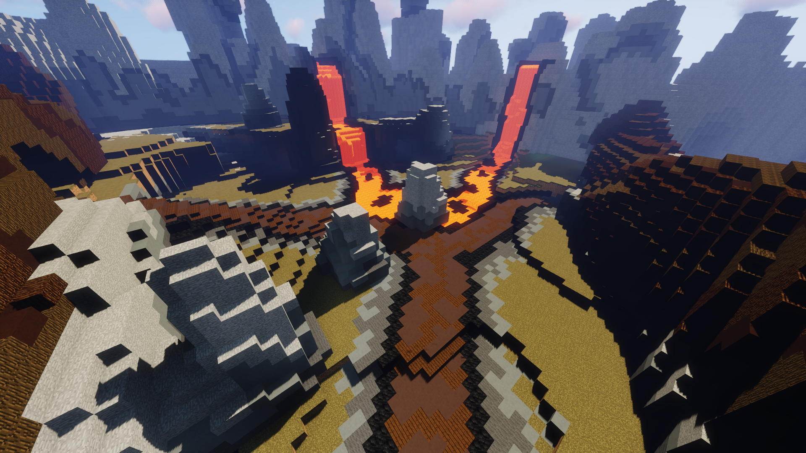
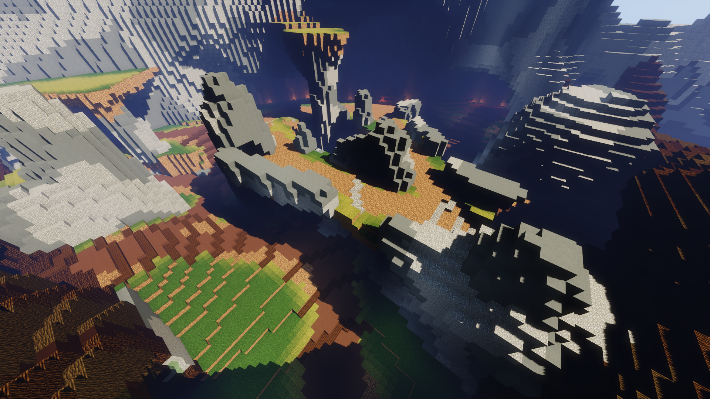
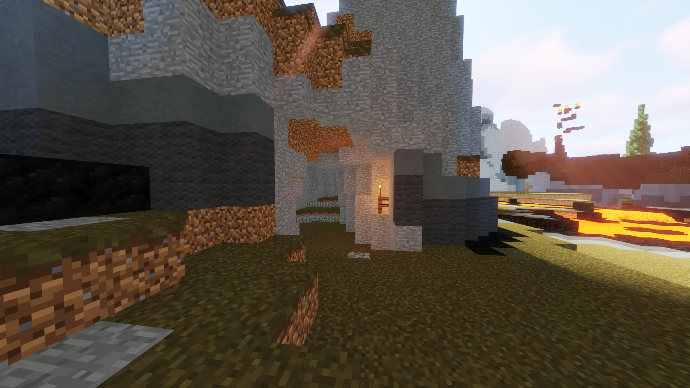
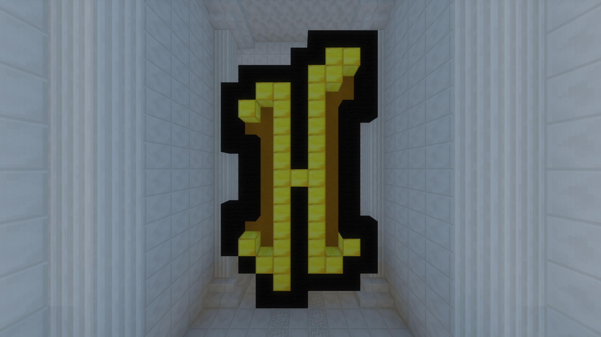

|  |
 |
| Top to bottom: An image of the tree in the center of the map; the spawn of the Elements map. |
From the Hypixel Pit Wiki
The Elements, or Original map, is a map in the Hypixel Pit. Its quadrants and name represent the four classical elements: fire, air, earth, and water. It was the first map to be released, published on February 26th, 2018, the day of The Pit's release. The Elements map appears after the Four Seasons map and before the Castle map in the map rotation.
The map has four quadrants; images of these are shown below.
Sky

Lava

Mountains

Water

Additionally, the map contains a secret area.
|  |
|  |
| Top to bottom: The entrance to the cave maze; the Hypixel "H" at the end of the maze. |
Maze
The Elements maze is located in the Lava quadrant at (89, 89, 52), inside of a cave. At the maze's end at (129, 89, 50), there is a large Hypixel H and a stack of rainbow wool on its back side.Trivia
Prior to 2020, it was possible to stand on the floating water island in the Water quadrant. However, barriers were added to prevent this. A suggestion requesting the water island be "freed" is the most upvoted Pit suggestion on the Hypixel Forums.